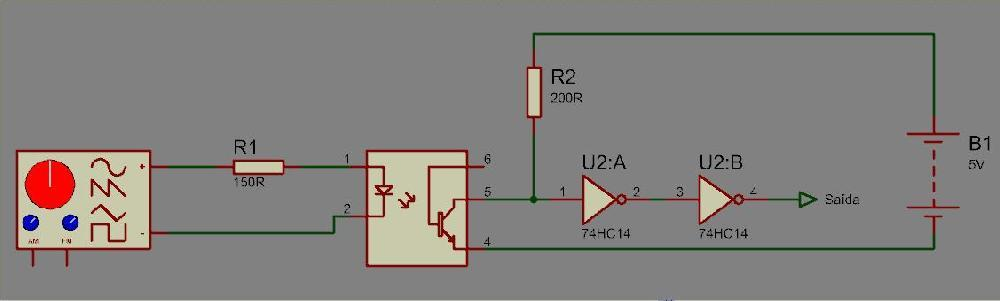

Esta obra de EnergyLabs Brasil, foi licenciada com uma Licença Creative Commons - Atribuição - Partilha nos Mesmos Termos 3.0 Não Adaptada.
Permissões adicionais ao âmbito desta licença podem estar disponíveis em http://www.energylabs.com.br.
Bom, estou fazendo esse documento para poder compartilhar algumas interfaces que uso em meus testes. Em geral são interfaces simples, porém a maioria das pessoas não as conhece ou não sabe usar. Então estarei aqui demonstrando as interfaces, de maneira simples porém facil de entender. Usarei o Gerador de Função para demonstrar o Sinal de Origem.
Essas interfaces são para aqueles que criam projetos com microprocessadores, FPGA's ou outros e querem ligar um alto falante mas não sabem um jeito seguro. O jeito mais simples é apenas um resistor em série, como demonstrado abaixo:
Repare que há um segundo circuito com um capacitor em série. Isso evita que flua corrente continua no alto falante, protegendo tanto o alto falante quanto a interface.
Esta interface é para haver um isolamento um pouco maior do CI, mas ainda fluindo uma corrente significativa. No caso do circuito, caso o sinal de entrada seja 5V, a corrente será 6mA. Porém no alto falante irá haver uma potencia de 20mW para 8Ohms.
Esta é uma interface mais complexa, mas que oferece um rendimento maior e também uma potência maior. Usando dois mosfets complementares pode gerar até 1W de potencia para 8 Ohms. A maior vantagem dele é a velocidade de chaveamento dos mosfets, que é bem alta. A desvantagem é que é necessário pelo menos um sinal de 10V para chavear os mosfets.
Como vocês podem reparar no ultimo esquema, é necessário pelo menos 10V para conseguir chavear os mosfets. Porém a maioria dos CI's tem interface 5V ou até menos. Como solucionar o problema? Simples! Basta usar um Level Shifter. O Level Shifter é um Tradutor de Tensão de Sinais, no circuito abaixo, usamos um Buffer com Saída Open-Collector de Relativa Alta Tensão ( 30V Maximos ). Esta interface é rapida e eficaz.
As vezes é necessário um isolamento galvânico (isolamento físico) de sinais elétricos por segurança. Neste caso podemos usar um Opto-Acoplador que é um CI com um Led e um Transístor Interno, fazendo uma interface Óptica de Sinais. No esquema abaixo há como usa-lo em um circuito genérico, note que o 74HC14 é um Schmitt Trigger, e serve para corrigir o sinal em Onda Quadrada na saída.

Pode parecer que eu já passei esse esquema, porém este daqui é apenas para sinais quadrados. Essa topologia de chaveamento é bem eficaz e funciona muito bem. É usada atualmente para Inversores, Bobinas de Tesla, Amplificadores Classe D, entre outros. É uma interface um pouco complexa, mas facil de montar. O GDT é um transformador enrolado em núcleo de pó de ferro, e o numero de voltas dependerá da frequência de trabalho. No geral pra uso em Bobinas de Tesla, a frequência fica em torno de 100 a 400 kHz, o que faz 10 voltas para cada enrolamento suficiente. O 1:1:1 em baixo dele, é a relação de voltas entre Primario:Secundário:Secundário.
Aqui passei umas interfaces, a maioria de montagem simples, mas que são muito úteis no dia a dia de quem faz projetos. Espero que essas interfaces ajudem a todos que queiram mecher com eletrônica.
Qualquer dúvida, me contatem!
Esta obra de EnergyLabs Brasil, foi licenciada com uma Licença Creative Commons - Atribuição - Partilha nos Mesmos Termos 3.0 Não Adaptada.
Permissões adicionais ao âmbito desta licença podem estar disponíveis em http://www.energylabs.com.br.